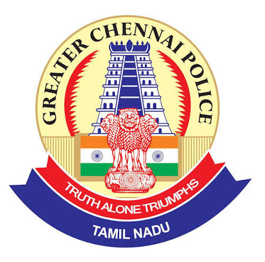

Greater Chennai City Police

The Greater Chennai Police (GCP) is the primary law enforcement agency for the Chennai metropolitan area, operating under the Tamil Nadu Home Department and headed by Commissioner of Police Dr. A. Amalraj, IPS. The force comprises over 100 police stations divided into four sub-divisions and handles public safety, law and order, and traffic management.
For emergency assistance, inquiries, or to report an incident, residents can use the
following
dedicated helplines and contact details:
- Police Emergency: 100
- Traffic Police Assistance: 103
- Women's Help Line: 1091
- COP SMS (Greater Chennai Police): 9500099100
- Commissioner's Office (Vepery): 044-23452359 or 044-23452320